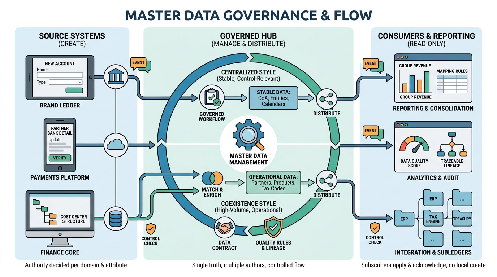

Part I — FOUNDATIONS: How Money Moves Through an Enterprise
Finance Data Architecture: Who Owns the Truth

Image generated by Google Gemini (gemini-3-pro-image-preview)
Part I — FOUNDATIONS: How Money Moves Through an Enterprise

Image generated by Google Gemini (gemini-3-pro-image-preview)